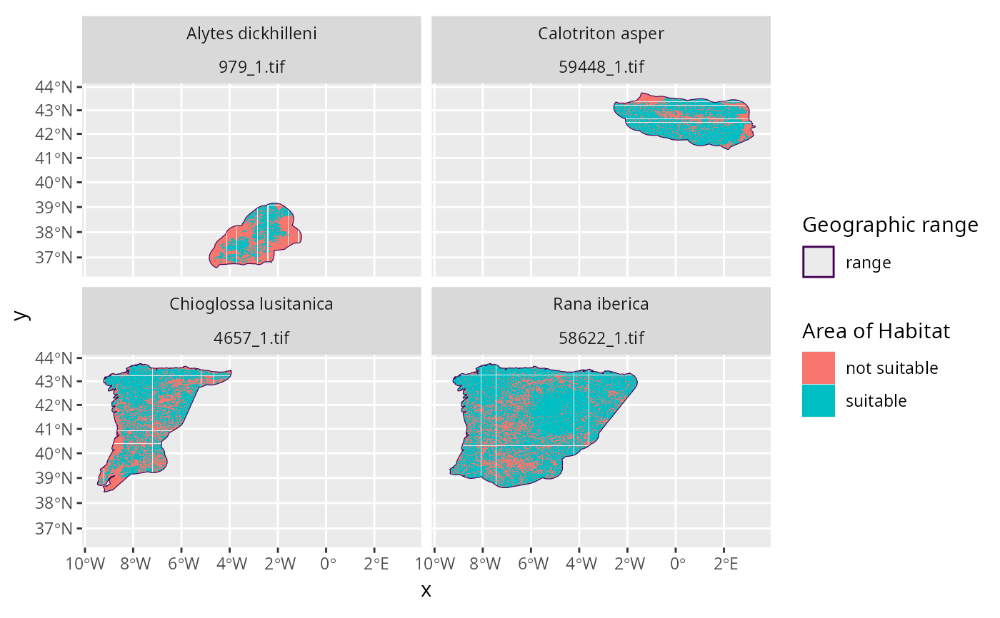

Create Area of Habitat (AOH) data for species based on their altitudinal and habitat preferences (Brooks et al. 2019).
create_spp_aoh_data(
x,
output_dir,
spp_summary_data = NULL,
spp_habitat_data = NULL,
elevation_data = NULL,
habitat_data = NULL,
template_data = get_world_behrmann_1km_rast(),
cache_dir = tempdir(),
iucn_version = "latest",
habitat_version = "latest",
key = NULL,
force = FALSE,
n_threads = 1,
use_gdal = is_gdal_available(),
omit_habitat_codes = default_omit_iucn_habitat_codes(),
verbose = TRUE
)| x |
|
|---|---|
| output_dir |
|
| spp_summary_data |
|
| spp_habitat_data |
|
| elevation_data |
|
| habitat_data |
|
| template_data |
|
| cache_dir |
|
| iucn_version |
|
| habitat_version |
|
| key |
|
| force |
|
| n_threads |
|
| use_gdal |
|
| omit_habitat_codes |
|
| verbose |
|
A sf::st_sf() object containing range maps for the species distributions
used to generate the Area of Habitat data and additional columns describing
the Area of Habitat data.
These range maps were produced by cleaning those supplied as an argument
to x so they can be used to generate the Area of Habitat data
(see clean_spp_range_data() for data cleaning procedures).
Specifically, the object contains the following columns:
numeric species' taxon identifier on the IUCN Red List.
character species name.
numeric seasonal distribution code.
character all habitat classification
codes that contain suitable habitat for the species.
If a given species has multiple suitable habitat classes,
then these are denoted using a pipe-delimited format.
For example, if the habitat classes denoted with the codes
"1.5" and "1.9" were considered suitable for a given species, then
these codes would be indicated as "1.5|1.9".
character habitat
codes used to create the species' Area of Habitat data.
Since the argument to habitat_data may not contain habitat
classes for all suitable habitats for a given species
(e.g. the default dataset does not contain subterranean cave systems),
this column contains the subset of the habitat codes listed in the
"full_habitat_code"column that were used for processing.
numeric lower elevation threshold used to create
the species' Area of Habitat data.
numeric upper elevation threshold used to create
the species' Area of Habitat data.
numeric value describing the spatial extent of
the Area of Habitat data.
numeric value describing the spatial extent of
the Area of Habitat data.
numeric value describing the spatial extent of
the Area of Habitat data.
numeric value describing the spatial extent of
the Area of Habitat data.
character file paths for Area of Habitat data
(in GeoTIFF format).
The Area of Habitat datasets denote the proportion of land
inside different grid cells that contain suitable habitat for
species' seasonal distribution.
Thus a grid cell with a value of 0 has 0% of its spatial extent covered by
suitable habitat, a value of 1 has 100% of its spatial extent covered by
suitable habitat, and a missing (NA) value
means that the cell is located outside of the species seasonal
distribution (per the geographic range data).
File paths that are denoted with missing (NA) values correspond to
species distributions that were not processed (e.g. due to lack of habitat
data).
The Area of Habitat data are produced by
(i) cleaning the range data to prepare them for subsequent analysis
(see clean_spp_range_data() for details);
(ii) automatically downloading global elevation and habitat classification
data (if needed);
(iii) automatically downloading information on the
altitudinal limits and habitat preferences of the species from the IUCN Red
List (per the taxon identifiers in the id_no column) (if needed);
and (iv) cross-referencing this information to identify suitable habitat
located within the altitudinal limits and geographic range of each species
(following Brooks et al. 2019).
To account for migratory species, the spatial distribution of species'
seasonal distributions (e.g. breeding, non-breeding, and passage
distributions) are processed separately.
Thus a separate Area of Habitat dataset is produced for each seasonal
distribution of each species.
Please note that these procedures are designed for terrestrial species
and will not apply to marine species.
Species range data are expected to follow the data format conventions
for the IUCN Red List (see IUCN Red List documentation for
details). Specifically, the argument to x must an
sf::st_sf() object with the following columns: id_no, presence,
origin, seasonal, terrestrial (or terrestial), freshwater and
marine. Below we provide a brief description of each column:
id_nonumeric taxon identifier on the IUCN Red List.
presencenumeric identifier describing information about
the presence of the taxon in the range data.
originnumeric identifier describing if the species is native
to the location(s) described by the range data.
seasonalitynumeric identifier describing if the species
is occupied by the location(s) describe by the range data throughout
the whole year, of if only during certain seasons.
terrestialcharacter value indicating if the range
data pertain to terrestrial environments (with "true" or "false"
values.)
freshwatercharacter value indicating if the range
data pertain to freshwater environments (with "true" or "false"
values.)
marinecharacter value indicating if the range
data pertain to marine environments (with "true" or "false"
values.)
Amatulli G, Domisch S, Tuanmu M-N, Parmentier B, Ranipeta A, Malczyk J, and Jetz W (2018) A suite of global, cross-scale topographic variables for environmental and biodiversity modeling. Scientific Data, 5:180040. Available at https://doi.org/10.1038/sdata.2018.40.
Brooks TM, Pimm SL, Akçakaya HR, Buchanan GM, Butchart SHM, Foden W, Hilton-Taylor C, Hoffmann M, Jenkins CN, Joppa L, Li BV, Menon V, Ocampo-Peñuela N, Rondinini C (2019) Measuring terrestrial Area of Habitat (AOH) and its Utility for the IUCN Red List. Trends in Ecology & Evolution, 34:977--986. Available at https://doi.org/10.1016/j.tree.2019.06.009.
Jung M, Dahal PR, Butchart SHM, Donald PF, De Lamo X, Lesiv M, Kapos V, Rondinini C, and Visconti P (2020a) A global map of terrestrial habitat types. Scientific Data, 7:1--8. Available at https://doi.org/10.1038/s41597-020-00599-8.
Jung M, Dahal PR, Butchart SHM, Donald PF, De Lamo X, Lesiv M, Kapos V, Rondinini C, and Visconti P (2020b) A global map of terrestrial habitat types (insert version) [Data set]. Zenodo Digital Repository. Available at https://doi.org/10.5281/zenodo.4058819.
# \dontrun{
# find file path for example range data following IUCN Red List data format
## N.B. the range data were not obtained from the IUCN Red List,
## and were instead based on data from GBIF (https://www.gbif.org/)
path <- system.file("extdata", "EXAMPLE_SPECIES.zip", package = "aoh")
# import data
spp_range_data <- read_spp_range_data(path)
# specify settings for data processing
output_dir <- tempdir() # folder to save AOH data
cache_dir <- rappdirs::user_data_dir("aoh") # persistent storage location
n_threads <- parallel::detectCores() - 1 # speed up analysis
# create cache directory if needed
if (!file.exists(cache_dir)) {
dir.create(cache_dir, showWarnings = FALSE, recursive = TRUE)
}
# create Area of Habitat data for species
spp_aoh_data <- create_spp_aoh_data(
x = spp_range_data,
output_dir = output_dir,
n_threads = n_threads,
cache_dir = cache_dir
)
#> ℹ initializing
#> Loading required namespace: gdalUtils
#> ✔ initializing [821ms]
#>
#> ℹ importing global elevation data
#> ✔ importing global elevation data [38ms]
#>
#> ℹ importing global habitat data
#> ✔ importing global habitat data [15.1s]
#>
#> ℹ importing species summary data
#> ✔ importing species summary data [1.2s]
#>
#> ℹ importing species habitat data
#> ✔ importing species habitat data [328ms]
#>
#> ℹ cleaning species range data
#> ✔ cleaning species range data [89ms]
#>
#> ℹ collating species data
#> ! argument to "habitat_data" is missing layers for the following 2 habitat classification codes: "7.1", "7.2"
#> ℹ collating species data
#> ✔ collating species data [80ms]
#>
#> ℹ preliminary geoprocessing
#> ✔ preliminary geoprocessing [162ms]
#>
#> ℹ preparing habitat data
#> ✔ preparing habitat data [1m 23.3s]
#>
#> ℹ preparing elevation data
#> ✔ preparing elevation data [17.2s]
#>
#> ℹ standardizing data
#> ✔ standardizing data [1.1s]
#>
#> ℹ generating Area of Habitat data
#> ✔ generating Area of Habitat data [1.2s]
#>
#> ℹ post-processing results
#> ✔ post-processing results [13ms]
#>
#> ✔ finished
# }
if (FALSE) { # interactive()
# \dontrun{
# preview data
print(result)
# }
}
# \dontrun{
# import AOH data as a list of terra::rast() objects
spp_aoh_rasters <- lapply(spp_aoh_data$path, terra::rast)
# print AOH data list
print(spp_aoh_rasters)
#> [[1]]
#> class : SpatRaster
#> dimensions : 516, 537, 1 (nrow, ncol, nlyr)
#> resolution : 1000, 1000 (x, y)
#> extent : -915531, -378531, 4551769, 5067769 (xmin, xmax, ymin, ymax)
#> coord. ref. : World_Behrmann
#> source : AOH_4657_1.tif
#> name : lyr.1
#> min value : 0
#> max value : 1
#>
#> [[2]]
#> class : SpatRaster
#> dimensions : 499, 752, 1 (nrow, ncol, nlyr)
#> resolution : 1000, 1000 (x, y)
#> extent : -904531, -152531, 4568769, 5067769 (xmin, xmax, ymin, ymax)
#> coord. ref. : World_Behrmann
#> source : AOH_58622_1.tif
#> name : lyr.1
#> min value : 0
#> max value : 1
#>
#> [[3]]
#> class : SpatRaster
#> dimensions : 228, 568, 1 (nrow, ncol, nlyr)
#> resolution : 1000, 1000 (x, y)
#> extent : -248531, 319469, 4837769, 5065769 (xmin, xmax, ymin, ymax)
#> coord. ref. : World_Behrmann
#> source : AOH_59448_1.tif
#> name : lyr.1
#> min value : 0
#> max value : 1
#>
#> [[4]]
#> class : SpatRaster
#> dimensions : 260, 371, 1 (nrow, ncol, nlyr)
#> resolution : 1000, 1000 (x, y)
#> extent : -468531, -97531, 4363769, 4623769 (xmin, xmax, ymin, ymax)
#> coord. ref. : World_Behrmann
#> source : AOH_979_1.tif
#> name : lyr.1
#> min value : 0
#> max value : 1
#>
# plot the data to visualize the range maps and AOH data
plot_spp_aoh_data(spp_aoh_data)

# }